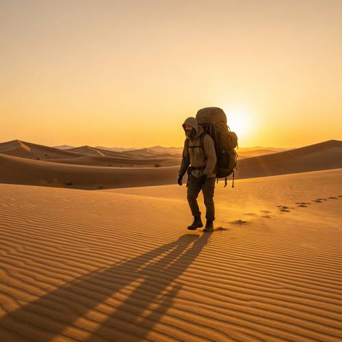
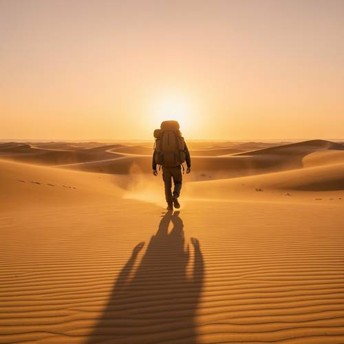
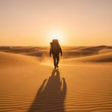
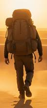

Action — In the golden desert at dusk, a traveler carrying a huge backpack is s
In the golden desert at dusk, a traveler carrying a huge backpack is struggling to walk into the distance, trailing a long shadow behind him.

Direct — one call, no iteration

Continuum — Qwen3.8-27B + FLUX.2-klein-9B
Judge — Direct
FAILAction - Full-body (Character/Anthropomorphic) — The image shows a full-body view of a person walking on a sand dune. The person is depicted mid-stride. While their posture, leaning forward, could suggest effort, their facial expression appears to be a slight smile, which does not convey the action of 'struggling'. Therefore, the specific action of struggling to walk is not clearly visible.
PASSRelationship - Composition — The image clearly shows a person, who can be described as a traveler, with a huge backpack on their back. The backpack is a distinct object being carried by the person, fulfilling the compositional relationship described.
Judge — Continuum
PASSAction - Full-body (Character/Anthropomorphic) — The image shows the full body of a person from behind, actively walking. One leg is forward in mid-stride, and sand is being kicked up, which, combined with the context of a desert and a large backpack, visually represents the action of 'struggling to walk'.
PASSRelationship - Composition — The image depicts a person who is carrying a very large backpack. The backpack is strapped to their back and is a prominent part of their figure, fulfilling the compositional requirement of 'a traveler carrying a huge backpack'.
What the agent did
Thinking
The user is asking for an image: at dusk in a golden desert, a traveler carrying an enormous backpack struggles to walk into the distance, casting a long shadow behind him. Let me generate this image with flux2-klein as per policy. Let me think about visual details: - Golden desert at dusk — warm golden/orange light, low sun - A traveler carrying an enormous backpack - Struggling to walk into the distance — meaning the figure is somewhat distant, seen from behind - Casting a long shadow behind him — because the sun is low in front, the shadow stretches toward the viewer - "Into the distance" — perspective receding, small figure on a wide desert plain Composition: wide shot, figure in the middle ground or distance, walking away, long shadow stretching toward the camera. Golden sand dunes, dusk sky with warm colors. Let me write a detailed prompt for generation: "Golden desert at dusk, wide cinematic shot, a lone traveler seen from behind in the middle distance, carrying an enormous overloaded backpack, struggling to walk away into the far distance, head slightly lowered with effort, long dramatic shadow stretching from his feet across the sand toward the foreground, warm golden low sun light, rippled dunes, hazy peach and amber sky, fine dust, cinematic, photorealistic" Size: default is 1024x1024. The prompt suggests a landscape composition. The harness controls the size — I shouldn't set the seed, and the size is fixed for comparison. Use the default 1024x1024? A wide shot might suit landscape better, but the benchmark says the image size is fixed for comparison — probably the harness sets it. The generate_image default is 1024x1024. I'll leave it at the default. Let me generate first, then inspect.
Step 1 — `generate_image`
{
"prompt": "Wide cinematic shot of a golden desert at dusk. A lone traveler seen from behind, positioned in the middle distance, carrying a huge oversized backpack, struggling to walk away into the far distance, posture hunched with effort, one leg mid-step. The low golden sun ahead casts a very long dramatic shadow of the traveler stretching from his feet across the rippled sand toward the foreground. Warm amber and peach dusk sky, soft haze on the horizon, undulating sand dunes glowing gold, fine wind-blown sand texture. Photorealistic, dramatic lighting, film still.",
"model": "flux2-klein"
}
Result img_0

Thinking
The generated image is excellent. Let me check the details: - Golden desert at dusk ✓ (warm golden/amber tones, low sun) - Traveler with a huge backpack ✓ (large pack visible) - Walking into the distance while struggling ✓ (walking away, head down) - Long shadow behind him ✓ (a long shadow stretching toward the foreground) To check the quality of the figure's rendering and the shape of the shadow, let me inspect the region more carefully.
Model
The first generation looks strong. Let me inspect the traveler and shadow up close to verify details before marking.
I need to use either a single text description or a rectangle. Let me try using a text roi "traveler with backpack and long shadow".
Step 3 — `inspect_region`
{
"image": "img_0",
"roi": "the traveler with backpack and his long shadow",
"padding": 0.1
}
Result img_1

Thinking
Zooming in on the traveler: he's seen from behind, wearing a big backpack, mid-stride, walking away into the distance, head slightly down. The figure looks natural, arms are fine, legs are mid-stride. The shadow at his feet is starting to stretch toward the viewer. This matches "struggling to walk into the distance" and "a long shadow behind him." The full image is very good: - Golden desert at dusk ✓ - Traveler with a huge backpack ✓ - Walking into the distance ✓ - Long shadow behind him ✓ Everything is in place. The shadow in the full image is long and dramatic. This is a good result. I'll mark img_0 as the best.
Model
The cropped image confirmed a well-rendered traveler: seen from behind, mid-stride, wearing a large pack, head slightly lowered with the effort, with a long shadow extending toward the foreground. All the elements of the prompt are present — golden dusk light, the receding figure, the huge backpack, the long trailing shadow. This is a strong result.
Step 4 — `mark_best`
{
"image": "img_0",
"reason": "All prompt elements present and correct: golden desert at dusk, traveler seen from behind with huge backpack walking away into the distance with effort, long dramatic shadow trailing toward the foreground. Figure and shadow verified clean in close-up crop."
}
Thinking
The image is marked as the best. It matches the prompt on all points. There's no need for further editing. I'll stop here and report back.
Model
The image is complete and marked as the best result. **What was produced:** A wide cinematic shot of a golden desert at dusk, with a lone traveler seen from behind in the middle distance. He carries a huge, overloaded backpack and is mid-stride, head slightly lowered with effort as he walks away into the far distance. The low sun ahead casts a long, dramatic shadow of him and his pack stretching across the rippled sand toward the foreground, under a warm amber-and-peach dusk sky over glowing dunes. I verified the figure and shadow at full resolution — the stride, the backpack detail, and the shadow's direction all render cleanly, and no further edits were needed.